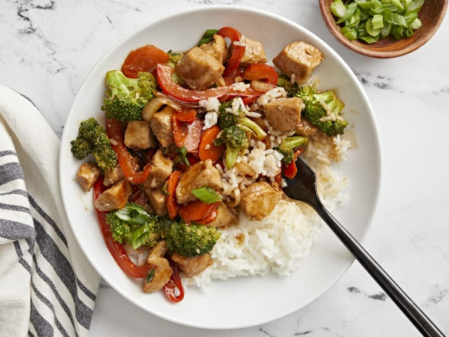

Chicken Stir Fry

Description
We're taking the stress out of worrying about “what's for dinner” this week and making this quick
and easy Chicken Stir Fry recipe. It includes lots of chicken, tons of veggies, and THEE best sweet
and savory stir fry sauce! It's also perfect for using up vegetables that you already have on hand in
your fridge or freezer. Not only is it great to add to your weekly dinner rotation, but it also makes
a lot, so it's perfect for meal prep! #winning
I make stir fry recipes quite often because it helps take away the mental stress of worrying about what
to cook for dinner. They're quick, easy to make, and super versatile so you can always switch things up.
Just pick your favorite protein, a mix of vegetables, make a yummy stir fry sauce, and dinner is ready
in about 30 minutes!
You can easily serve this chicken stir fry with a side of brown or white rice or give our Coconut Rice a
try! And if you really want the full take-out experience, whip up some of our Vegetable Fried Rice to
serve on the side.
Nutrition
- Serving: 1
- Protein: 12 g
- Fiber: 3 g
- Calories: 198 kcal
- Fat: 10 g
- Carbohydrates: 18 g
- Sodium: 819 mg
Ingredients
Here are the things you will need to get before making this dish:
- Sauce
- 1/3 cup soy sauce
- 3 Tbsp brown sugar
- 2 tsp toasted sesame oil
- 2 cloves garlic, minced
- 1 1/2 Tbsp cornstarch
- 1/3 cup water
- 1 tsp sriracha
- Stir Fry
- 3/4 lb. broccoli
- 2 carrots
- 1 red bell pepper
- 1 small onion
- 2 green onions
- 2 boneless, skinless chicken breasts (about 1 1/3 lbs. total)
- 3 Tbsp cooking oil, divided
Steps
Stir Fry Sauce
- Make the stir fry sauce first. Stir fry recipes cook fast, so you want the sauce to be ready when
it's time to add it to the skillet.
- Use a big wok or very large skillet. In order for all of the chicken and vegetables to fit in the
skillet with enough space to cook fairly evenly, you'll want to use a big wok or large skillet.
We used a 12-inch skillet for this recipe.
- Don't overcook the vegetables. You want the vegetables to just be tender-crisp and vibrantly colored.
You can always cook them a little longer once the sauce is added at the end, but if you cook them too
long in the first steps you'll end up with limp vegetables that are a drab color.
Chicken Stir Fry
- Start by making the stir fry sauce. Combine the soy sauce, brown sugar, toasted sesame oil, garlic,
ginger, sriracha, cornstarch and water in a small bowl. Set the sauce aside.
- Chop the broccoli into small florets. Slice the red bell pepper, onion, and carrots into similar sized
pieces. Slice the green onions. Set all the vegetables aside.
- Next, cut the chicken breasts into small 1/2 inch sized pieces.
- Heat a very large skillet or wok over medium-high heat. Once hot add 2 Tbsp of cooking oil and swirl to
coat the surface of the skillet. Add the chicken and cook until browned on all sides. Be careful not to
overcook the chicken. Once the chicken is browned, remove it from the skillet onto a separate plate and
set aside.
- In the same skillet, add the remaining 1 Tbsp of cooking oil along with the carrots and broccoli. Cook
and stir for one minute, or just until the broccoli begins to turn bright green.
- Next, add the red bell pepper and onion to the skillet. Continue to cook and stir for 1-2 more minutes.
- Give the stir fry sauce another brief stir. Now add the cooked chicken back to the skillet, then pour the stir
fry sauce over the chicken and vegetables. Give everything a stir and allow the sauce to come up to a simmer,
at which point it will start to thicken and turn glossy. Continue to cook for 1-2 more minutes or until it has
reached your desired doneness.
- Remove the chicken stir fry from the heat, top with green onions and sesame seeds (optional) and serve!